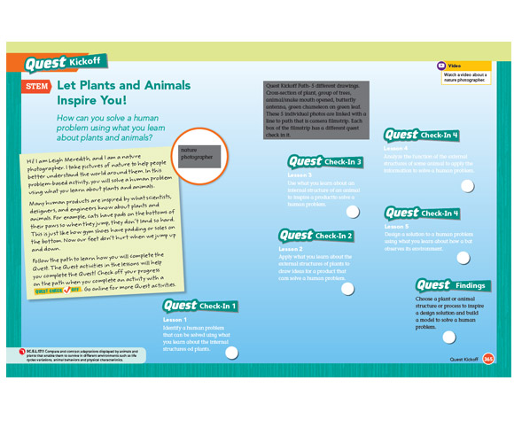
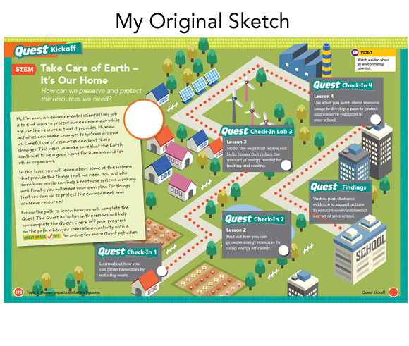
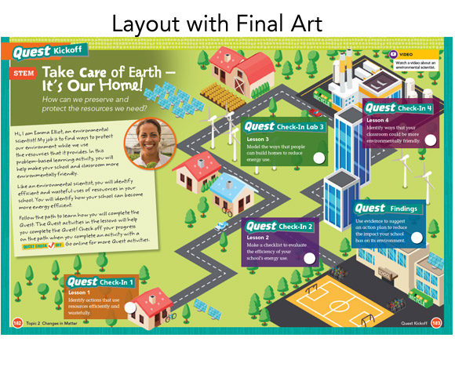
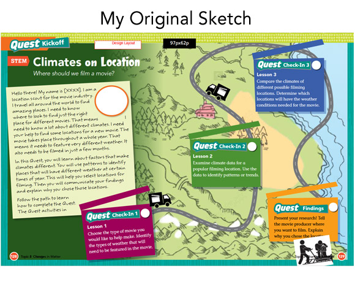
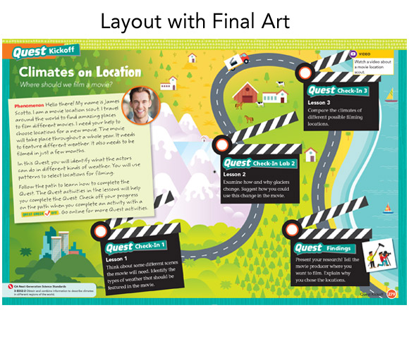
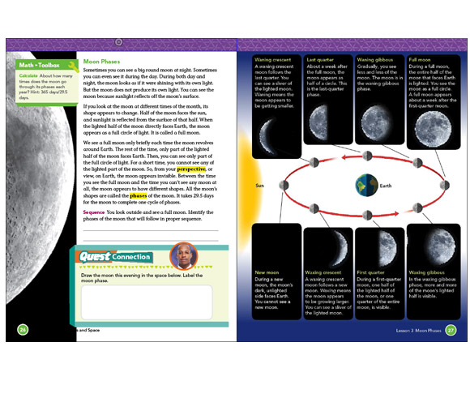
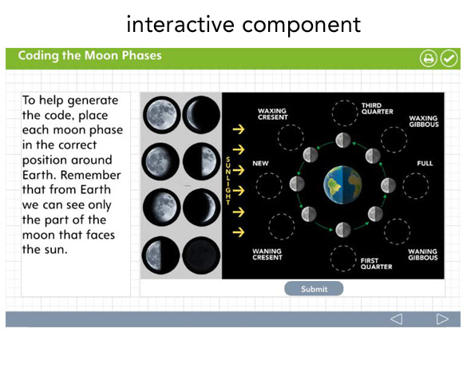

I was one of a team of designers that split up and designed hundreds of pages in a science textbook program. It was a pretty straight forward photo layout project. The coolest spread was the opener kickoff for each unit. It had to have a path like layout based on the unit content and editorial suggestion. Each unit was separated into quests that the student had to study through to complete the unit. The kickoff spread had to reveal a series of stops along the quest path. A few examples of my original designer sketch and the final illustration are shown below. These had to go through a committee of art directors, art buyers and editors.
The first image is the empty template we had to start with. An additional interactive digital feature was also part of the program and all designers had to brainstorm and build assets for the interactive interfaces based on common digital standards. The interactive interfaces to choose from included, anything from simple slide/reveal images, to complicated drag & drops. This sample was a drag & drop for the moon phases that correlated to a page also designed by me in the book.
Client: Educational Publisher
Services: Graphic design, Art Direction, Interactive
Year: 2022

Original template to work from when developing opening spread.

One of twenty opening spreads assigned to me for concept and art direction.




Typical Interior Design

Interactive component to work with interior page lesson